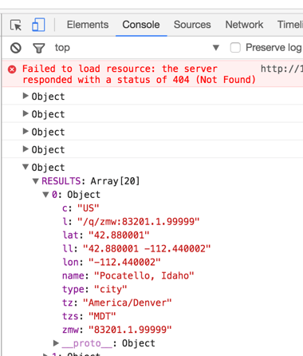

Building a Search Tool
Overview
Last week you learned how to request JSON data from a remote weather service, extract individual pieces of weather information from the returned JSON and display it to a web page. This activity will extend that exercise by showing you how to do a similar task. This exercise will dynamically request a list of cities that match text typed into a search box. Once obtained, you will build a link around the individual cities and display all the results in a list. When a link is clicked you will go to the remote Weather Underground website to display the weather information for that city.
Resources
To complete this activity you will need to:
- Review the AutoComplete API at wunderground.com - https://www.wunderground.com/weather/api/d/docs?d=autocomplete-api&MR=1.
- Review the jQuery:
- Keyup event - https://api.jquery.com/keyup/
- getJSON function - http://api.jquery.com/jquery.getjson/
- each function - http://api.jquery.com/jquery.each/
- Build:
- A search html page
- An external JavaScript file
- Have a link to a CDN or local copy of jQuery
- A CSS file to style the web page, the search results and links within the search results
Build the Search page
- Create a new html page, name it search.html
- The page will need two parts:
- A search form (use the code shown below)
<form method="get" action="//autocomplete.wunderground.com/aq" id="srchfrm">
<input type="search" name="query" id="query">
<input type="submit" name="submit" value="Search" id="send">
</form> - A search results area (use the code shown below)
<section id="searchResults">
<h2>Search Results</h2>
</h2> - Just like last week, connect to jQuery (CDN version is preferred) using a script element.
- Just like last week, connect to a local JavaScript file (e.g. “search.js”) where you will write your code.
- Be sure the search page meets all of the typical expectations of html pages built during the semester.
- A search form (use the code shown below)
Build the search.js file
This document will create an “on the fly” search using the weather underground autocomplete API. This means as the name of a location is typed in the search bar, the JavaScript will search and return from the weather underground site a list of city or location names that match what is being typed. The list of results will be displayed into the search results of the page as links to see the weather information for the page.
- Use a jQuery object to focus on the “query” input form field. Then, add a keyup event to the object and declare an anonymous function.
$('#query').keyup(function(){
// All code will be inside of this block
}); // end keyup - Within the function declare a variable to capture the value being typed into the query input field.
var value = $('#query').val(); - Next, create a variable that creates a new Regular Expression based on the value of the input variable, but is case insensitive.
var rExp = new RegExp(value, "i"); - Now, use the jQuery getJSON method to retrieve data from the autocomplete API based on the case insensitive value being typed.
$.getJSON("http://autocomplete.wunderground.com/aq?query=" + value + "&cb=?", function (data) {
}); // end getJSON
An explanation of the getJSON function
- The function requires a path from which the JSON will be retrieved, in this case wunderground.com.
- Included in the path is a key-value pair of “query” as the key and the value of what is being sought. In our case, the value is what is being typed into the search box, represented by the variable “value”.
- Because we are requesting data from a remote source we have to add a second key – value pair. In this case the key is “cb” (meaning call back) and the value is “?” (meaning anonymous).
- Lastly, we add a comma and declare an anonymous function to handle the successful retrieval of any JSON data. The JSON will be stored into a variable named “data”.
Handling the JSON Data
With the function in place, test to see if anything was returned:
- Inside the getJSON anonymous function write a console log command.
console.log(data); - Save your work. Return to the html file and run the file in Live Preview.
- In the search bar begin typing the name of your home town.
- Do NOT hit your "Return" or "Enter" key, just type.
- Right-click the browser window and choose, "Inspect".
- In the Inspect tool, click the "Console" tab.
- If things worked you should see a list of objects.
- There will be an object for each letter you typed.
- Expand the bottom object and you should see an item named “RESULTS” which is an array of 20 objects. Each array object is a city or location whose name matches or is similar to what you typed.
- For example, if I typed “Poca” in the search box, the last Object, when expanded should show the following:
 - Assuming the data is successfully being retrieved, you can begin building the output to show in the screen.
- Directly below the console.log(data); line write the rest of the code as seen below (begin with // Begin building output comment, which is line 6) and end with the line just above the // end getJSON comment (which is line 16):
See the Pen Autocomplete Wunderground API Search by Blaine Robertson (@blainer) on CodePen.
Code Explanation
We want the results from the search term to be displayed on the web page as an unordered list. But, rather than write each line, one at a time, to the web page for display we will build the entire list and display it once.
- The first line beneath the comment (line 7) begins by adding the opening unordered list tag to a JS variable named “output”.
- The second from last line you will type (line 15) ends the unordered list by adding the closing unordered list tag to the “output” variable.
- Line 8 begins a loop (using the jQuery “each” function) based on what is found inside of data's RESULTS object. Refer to the console tab of the web inspector tool to see this.
- Within the each loop we are passing in an anonymous function that will take each item within the RESULTS object and assign it’s key to a JS variable named “key” and the associated value to a variable named “val” (think of this as an example JSON pair of “temp”: 85).
- Line 9 then does a test to see if the val object has a name value that matches the value of the search term being typed (It is true if the value is not -1).
- If so, then lines 10 through 13 build a list item to be added to the unordered list of for every item that matches.
- Line 11 specifically builds an html anchor pointing to the weather underground site and includes the value that matches the “val” object’s “l” key. If you look at the console log you will see that “l” is a reference to the specific city or location. The rest of the link adds the city or location name to the title attribute and to the link text.
- All of this code is added to the “output” variable.
- Finally line 16 finds the html page element identified with the id of “searchResults” and injects the “output” code as html into it.
The result should be a dynamically updating list of locations that match the term being typed into the search box.
Any of the terms can be clicked which will result in the weather information being displayed for that location on the Weather Underground web site.
Looking Forward
In this activity you built a simple search bar that requests information from the Weather Underground Autocomplete API to provide a list of locations based on what is typed into the search box.
In addition, the text that appears is a link to provide current weather information about that location, but on the Weather Underground web site, not your own.
Last week you learned how to request weather information for a specific location from weather underground in order to display it on your own site.
The assessment for this module will put the two concepts together, you will use the search bar to request information about locations that match the search term, but when the link is clicked it will request a JSON file of weather information which you can then use to display that data on your own site. Refer to the Search Assessment for details.